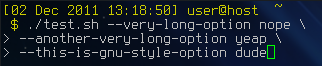

bash скрипт с поддержкой длинных (gnu-style) опций

Предстала на первый взгляд тривиальная задача: написать скрипт с различными опциями при запуске. Допустим нужно обработать всего две опции: name и dir. И задача действительно тривиальна при условии, что опции у нас короткие. Но если есть жгучее желание использовать длинные опции, то пиши пропало: getopts, который планировалось использовать изначально, в bash совсем на это не годится.
Хотя в ksh всё работает на ура:
#!/bin/ksh
while getopts "f(file):s(server):" flag
do
echo "$flag" $OPTIND $OPTARG
done
Но у нас bash, поэтому грустно вздыхаем и пытаемся выбраться из сложившейся ситуации.
Вриант парсить самостоятельно с одной стороны привлекателен, но уж слишком скучен и неинтересен: каждый раз нужно думать об обработке ошибок, исключений и многих других вещах. Да и не хочется каждый раз изобретать велосипед, при написании подобного скрипта.
#!/bin/bash
while true;
do
case "$1" in
-n | --name ) echo NAME="$2"; shift 2;;
-d | --dir ) echo DIR="$2"; shift 2;;
esac
done
Можно попробовать использовать getopts с небольшим хаком для поддержки длинных имён:
#!/bin/bash
while getopts ":n:d:-:" OPTION; do
case "$OPTION" in
-) case "$OPTARG" in
name) echo LONG_NAME="${!OPTIND}";;
dir) echo LONG_DIR="${!OPTIND}" ;;
esac;;
n) echo SHORT_NAME="$OPTARG" ;;
d) echo SHORT_DIR="$OPTARG" ;;
esac
done
Но назвать рабочим такое решение, язык не поворачивается: одновременно поддерживается только одна длинная опция (первая указанная в параметрах), вторая будет проигнорирована.
Сетуем, что в bash до сих пор не впилили getopts_long, но гугл подсказывает, что это можно сделать самостоятельно: скачиваем функцию getopts_long и включаем её в наш скрипт:
#!/bin/bash
. getopts_long
while getopts_long :d:n::vh opt \
name required_argument \
dir required_argument \
help 0 "" "$@"
do
case "$opt" in
n|name) echo NAME="$OPTLARG";;
d|dir) echo DIR="$OPTLARG";;
help 0 "" "$@"
esac
done
Казалось бы вот оно, счастье, но нашлось ещё более элегантное решение: более продвинутая библиотекаshflags, которая помимо парсинга опций умеет так же и проверять значения. Различаются строки, логические переменные, целые числа, нецелые числа (по сути это строки, т.к. в шелле нет понятия нецелых чисел, но проверка на правильность формата есть. Определяется это при указании переменных через DEFINE_string|_boolean|_float|_integer и даже самостоятельно обзывает переменные для опций согласно длинному имени опции, так же поддерживает кучу различных шеллов (sh, bash, dash, ksh, zsh). Красота да и только. Более подробно о плюшках можно посмотреть в самой библотеке. Там достаточно подробная справка. Пример использования:
#!/bin/bash
. ./shflags
DEFINE_string 'name' 'world' 'comment for name' 'n'
DEFINE_string 'dir' 'dir' 'comment for dir' 'd'
FLAGS "$@" || exit 1
eval set -- "${FLAGS_ARGV}"
echo "Name is ${FLAGS_name} and dir is ${FLAGS_dir}"
Однако и в этом решении есть ложка дёгтя: библиотека использует getopt для парсинга опций, а негнутый getopt, как пишут в интернетах, не поддерживает длинные опции. Так что возможны проблемы с совместимостью.